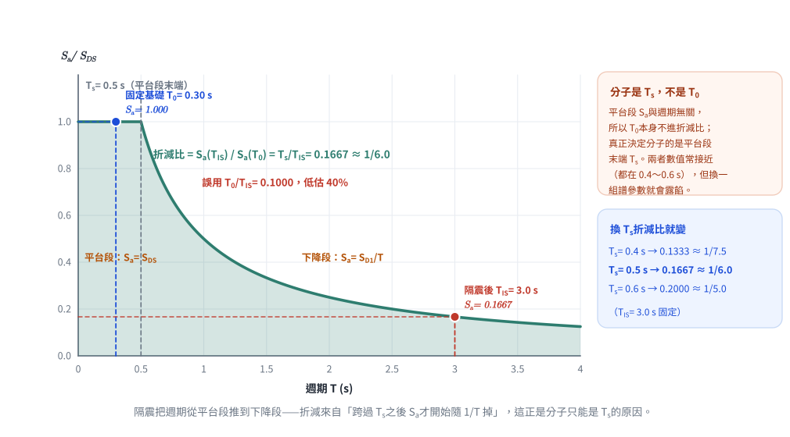
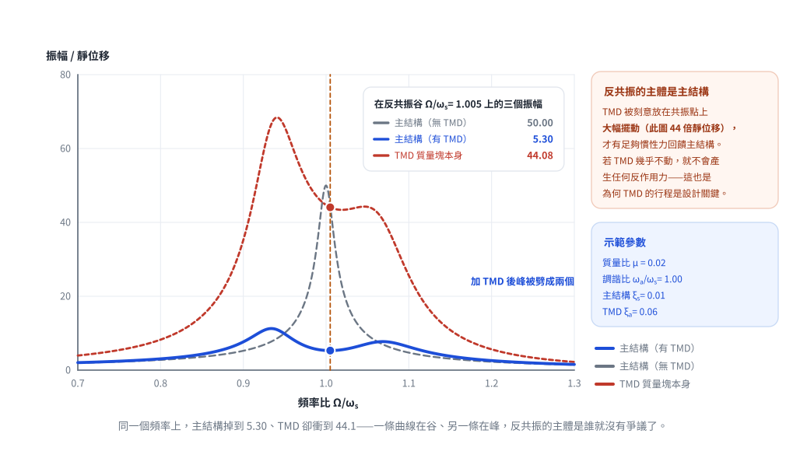
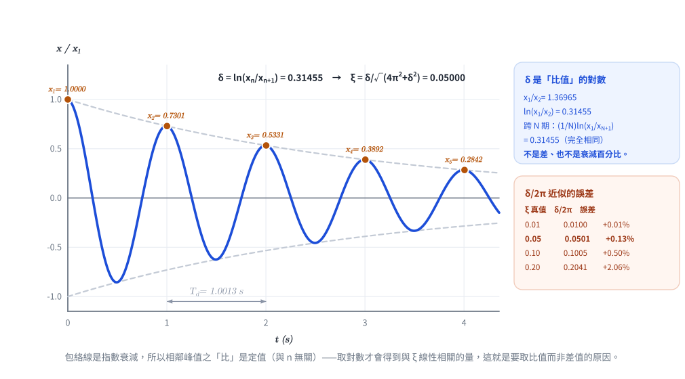

📄 題目正本：考卷原文・附圖・判讀清單（已確認）
SD-2013-1 題目正本
本檔只記錄考卷上寫了什麼、圖上畫了什麼，不含任何解法。解析見同資料夾
SD-2013-1.md。
判讀清單經使用者確認前，狀態為「待確認」；確認後本檔原則上不再修改（改動須回考卷原圖並記 log）。
| 項目 | 內容 |
|---|---|
| 考卷 | raw/exams/SD-2013_結構動力分析與耐震設計.pdf，第 1 頁（正面），第一題 |
| 考年 | 2013（民國102年）專技高考結構工程技師「結構動力分析與耐震設計」 |
| 配分 | 40 分（四小題各 10 分） |
| 附圖 | 無附圖（純文字論述題） |
| 判讀狀態 | 已確認（2026-11-16，使用者授權依 Claude 建議）。原轉錄：2026-11-16 轉錄；PyMuPDF 110 dpi 整頁目視，PDF 文字層（pdftotext）核對原文；盲讀於開啟解析前完成 |
1. 考卷原文（逐字）
一、請回答下列問題：
㈠在建築結構底部加設隔震設施（Isolator）可以有效減少此建築結構在地震時之內力反應之主要原因。（10 分）
㈡在高樓結構上層加設調諧質量塊阻尼器（Tuned Mass Damper）可以有效增加此建築結構在颱風時舒適性之基本原理。（10 分）
㈢以側推分析方法（Push-over Method）配合地震反應譜可以有效評估既有建築結構耐震能力之基本假設及分析步驟。（10 分）
㈣以建築結構自由振動反應的衰減數據，可以有效推估此建築結構之黏滯性阻尼比（Viscous-damping Ratio）之基本原理。（10 分）
2. 考卷給的公式、附表與參數
- 考卷沒有給參考公式、附表或任何數值。
- 考卷沒有給：結構週期、阻尼比、隔震器或 TMD 參數、反應譜、指定規範或指定的側推評估方法（容量震譜法、位移係數法等）。
- 卷首注意事項：㈠可以使用電子計算器。㈡不必抄題，作答時請將試題題號及答案依照順序寫在試卷上，於本試題上作答者，不予計分。考試時間：2 小時。
3. 附圖
本題無附圖。
4. 判讀清單
| # | 項目 | 判讀 | 圖上／題文依據 | 把握 |
|---|---|---|---|---|
| 1 | ㈢「側推分析方法配合地震反應譜」用哪一種評估法 | 考卷未指定；定案：作答以「側推容量曲線＋反應譜（需求譜）求性能點」這一類方法（容量震譜法）說明基本假設與步驟，可旁及位移係數法；不影響任何數值答案 | 題文只寫「側推分析方法（Push-over Method）配合地震反應譜」 | 不確定（解讀，定案如左） |
| 2 | 各小題的語法 | 四小題皆為名詞片語（「…之主要原因／基本原理／基本假設及分析步驟」），承接題首「請回答下列問題」，即要求說明該原因／原理／假設與步驟 | 題文，照考卷原文 | 確定（解讀） |
| 3 | ㈠ 問的對象 | 上部結構在地震時的「內力反應」（構材內力、樓層剪力）為何能減少的主要原因 | 題文「內力反應之主要原因」 | 確定（解讀） |
| 4 | ㈡ 的載重情境 | 颱風（風力）下的「舒適性」（樓層加速度／振動感受），不是地震 | 題文「在颱風時舒適性」 | 確定 |
| 5 | ㈡ TMD 位置 | 高樓結構上層 | 題文 | 確定 |
| 6 | ㈢ 評估對象 | 既有建築（耐震能力評估），要求「基本假設」與「分析步驟」兩部分 | 題文 | 確定 |
| 7 | ㈣ 所求 | 由自由振動衰減數據推估「黏滯性」阻尼比的基本原理 | 題文 | 確定 |
| 8 | 計算要求 | 全題沒有數值計算；配分 4×10 = 40 分 | 題文配分 | 確定 |
| 9 | 考卷沒有給 | 任何數值、反應譜、規範版本、側推評估法的指定 | 題文 | 確定 |
轉錄：2026-11-16（SD-U3-2 題目正本推廣・U3-2-G3）
確認：2026-11-16 使用者授權依 Claude 建議確認（SD-U3-2 題目正本推廣・U3-2-G3，關卡一）
考題編號：SD-2013-1
主分類： SD-U3-2 隔減震原理
副分類： SD-U1-1 結構動力基本性質及原理、SD-U3-1 結構耐震設計（含 RC 結構與鋼結構）
分析方法： 概念題（隔震 + TMD + Pushover + 對數衰減率）
標籤： 基礎隔震 隔震原理 延長週期 TMD 調諧質量塊阻尼器 動力吸振器 側推分析 Pushover 容量譜法 ADRS 自由振動 對數衰減率 阻尼比推估 黏滯阻尼比
1. 題目（考卷原文見題目正本）
考卷原文、公式／附表、附圖與判讀清單（已確認）見
SD-2013-1-problem.md。本節只列解題時最容易讀錯的地方與本解使用的記號；題意以題目正本為準。
常見誤讀
| 項目 | 正確判讀 | 常見誤讀 |
|---|---|---|
| ㈡ 載重情境 | 颱風（風力）下的舒適性，即樓層振動加速度的感受（判讀 #4） | 寫成地震時的舒適性或結構安全 |
| ㈢ 評估方法 | 考卷未指定；以側推容量曲線結合需求反應譜求性能點（容量震譜法類）說明基本假設與步驟（判讀 #1，使用者授權依建議確認） | 只寫側推加載步驟、沒有和反應譜結合 |
| ㈠ 所問對象 | 上部結構在地震時的內力（構材內力、樓層剪力）為何能減少（判讀 #3） | 只談隔震層位移 |
| ㈣ 阻尼種類 | 黏滯性阻尼比，由自由振動振幅的衰減推估（判讀 #7） | 與摩擦（庫倫）阻尼的線性衰減混為一談 |
| 計算要求 | 全題四小題皆為論述，無數值（判讀 #8、#9） | 自行假設數值當題目條件 |
本解記號： $\delta$ 對數遞減率、$\xi$ 黏滯阻尼比、$\omega_0$ 自然圓頻率、$x_n$ 第 $n$ 個峰值振幅、$\mu$ 質量比（TMD）。
2. 考題核心精神與出題者意圖 (Core Concepts & Examiner's Intent)
核心觀念：
- 題(一)：隔震 → 延長週期 → 脫離地震高能頻段 → 慣性力大幅降低
- 題(二)：TMD → 動力吸振原理 → 反相抑制共振 → 降低結構加速度反應
- 題(三)：Pushover → 第一振態假設 → 能力譜法 → 找「性能點」
- 題(四)：對數衰減率 → 兩振動峰值比值 → 直接推估阻尼比
出題者意圖：
本題廣泛考察「結構動力學 + 耐震設計」四大核心概念，每題 10 分、論述為主，考驗考生對物理原理的理解深度（而非套公式），需說明原理機制而非僅列結果。
3. 解題戰略地圖與陷阱分析 (Strategic Roadmap & Trap Analysis)
題(一)陷阱：
不能只說「延長週期」——必須解釋：延長週期後，設計反應譜中加速度 $S_a$ 在長週期段顯著降低，慣性力 $F = m \cdot S_a$ 因此減小，內力才減小。要串聯「週期→譜加速度→慣性力→內力」的因果鏈。
題(二)陷阱：
「舒適性」取決於加速度（非位移）。TMD 抑制共振，降低頂層加速度反應，是原理核心。不能只說「吸振」，要說「反相力」抑制主結構運動的機制。
題(三)陷阱：
基本假設必須包含「第一振態主導」和「振態形狀固定（不隨變形改變）」兩條。分析步驟需包含「能力譜轉換（ADRS 格式）→ 需求譜→ 性能點」，而非只說「做非線性分析」。
題(四)陷阱：
對數衰減率 $\delta$ 是相鄰兩峰值「比值」的自然對數 $\ln(x_n/x_{n+1})$——不是兩峰值的差，也不是衰減百分比。需寫出推導過程（欠阻尼自由振動解 → 相鄰峰值比 → 取對數 → 連結阻尼比 $\xi$）。
3.5 變數層次分析 (Variable Hierarchy Analysis)
最終目標
四個子題均為論述，不需數字計算；最終目標是用清晰的物理邏輯說明各機制。
題(四)核心公式（唯一有公式推導的子題）
$$x(t) = e^{-\xi\omega_0 t}\left[A\cos(\omega_d t) + B\sin(\omega_d t)\right]$$
$$\delta = \ln\frac{x_n}{x_{n+1}} = \frac{2\pi\xi}{\sqrt{1-\xi^2}}$$
$$\boxed{\xi = \frac{\delta}{\sqrt{4\pi^2 + \delta^2}} \approx \frac{\delta}{2\pi} \quad (\text{輕阻尼})}$$
L3：深層知識
| 知識點 | 說明 | 卡關? |
|---|---|---|
| 設計反應譜形狀 | 長週期段 $S_a = S_{D1}/T$，週期越長加速度越小 | |
| TMD 抗共振機制 | 主質量-副質量構成「動力吸振器」；副質量在共振時產生與主質量反相的力 | |
| 能力譜法 ADRS | 將 Pushover 曲線的 V-δ 轉換為 $S_a$-$S_d$ 與反應譜疊圖，找交點 | |
| 欠阻尼自由振動 | 峰值包絡線為 $e^{-\xi\omega_0 t}$；相鄰峰值間隔為有阻尼週期 $T_d = 2\pi/\omega_d$ |
4. 步驟化詳細計算過程（論述題）
題(一)（10分）：隔震設施減少內力反應的主要原因
隔震設施（如鉛心橡膠支承 LRB、摩擦單擺系統 FPS）的工作原理可從以下三個層面說明：
一、延長結構自然週期，脫離地震能量主要頻段
一般固定基礎建築的自然週期 $T_0$ 通常為 0.1～1.5 秒，正好落在地震設計反應譜的高加速度段（短週期平坦段或上升段）。
加設隔震層後，整體系統的等效週期 $T_{IS}$ 延長至 2～4 秒：
$$T_{IS} = 2\pi\sqrt{\frac{W}{g \cdot K_{eff}}}$$
此長週期段對應的設計譜加速度：
$$S_a(T) = \frac{S_{D1}}{T} \quad (T > T_s)$$
$T_{IS}$ 越大，$S_a$ 越小。
⚠ 不可直接用 $T_0/T_{IS}$ 相除。 $S_a \propto 1/T$ 只在反應譜的下降段（$T > T_s$）成立；
一般固定基礎建築的 $T_0$ 多半還落在平台段，該段 $S_a = S_{DS}$ 是定值、與週期無關。
正確的折減比應以平台段末端 $T_s$ 為分界：$$\frac{S_a(T_{IS})}{S_a(T_0)} = \frac{S_{D1}/T_{IS}}{S_{DS}} = \frac{T_s}{T_{IS}} \qquad (T_0 \le T_s < T_{IS})$$
以 $T_s = 0.5$ s、$T_{IS} = 3$ s 為例，$S_a$ 降為原來的 $0.5/3 \approx 1/6$；
若 $T_s = 0.4$ s 則為 $1/7.5$。分子是 $T_s$，不是原結構週期 $T_0$——
兩者數值上常接近（都在 0.4～0.6 s），但物理意義完全不同，換一組譜參數就會露餡。

圖 1 隔震折減的來源。$T_0$ 落在平台段（$S_a$ 與週期無關），所以折減比的分子只能是平台段末端 $T_s$；圖右列出 $T_s$ 取 0.4／0.5／0.6 s 時折減比如何跟著變，證明它確實是 $T_s$ 在決定。
二、地震慣性力大幅降低，各樓層內力顯著減小
樓層慣性力：
$$F = m \cdot S_a(T_{IS})$$
$S_a$ 減小後，傳入上部結構的慣性力同比例降低，梁柱的彎矩、剪力及軸力均大幅下降。上部結構在地震中接近剛體運動——各樓層幾乎同步位移，層間位移趨近零，內力自然極小。
三、隔震層集中消能，保護上部結構
隔震器（尤其是含鉛心的 LRB）具有顯著的遲滯阻尼，可在隔震層消散大部分地震能量：
$$W_D = 4n F_y (1-\alpha)(D_D - F_y/k_o)$$
上部結構只需承受已大幅衰減後的地震力，無需進入彈塑性狀態即可確保安全，內力反應大幅降低。
結論：
$$\boxed{\text{隔震主因：延長週期} \Rightarrow S_a \downarrow \Rightarrow F = mS_a \downarrow \Rightarrow \text{內力反應大幅降低}}$$
題(二)（10分）：TMD 增加颱風時舒適性的基本原理
何謂「舒適性」？
建築舒適性由頂層水平加速度決定（而非位移）。常用的居住性評估標準（ISO 6897、ISO 10137、AIJ 等）以尖峰或 RMS 加速度訂門檻，量級約在 $5 \sim 25$ milli-g（$0.005 \sim 0.025g$），且隨用途（住宅嚴於辦公）與重現期（常用 1 年或 10 年風）而異。風力在結構自然頻率附近激振時形成共振，此時頂層加速度最大，居住者有不適感。
TMD 的動力吸振原理
TMD 由附加質量 $m_a$、彈簧 $k_a$、阻尼 $c_a$ 組成，安裝於結構頂部。
其自然頻率調諧至主結構自然頻率：
$$\omega_a = \sqrt{k_a/m_a} \approx \omega_0$$
當主結構受風力激振（頻率 $\Omega \approx \omega_0$）產生共振位移 $x_s(t)$ 時：
- TMD 因調諧而自身處於共振，質量塊產生遠大於主結構的振幅——這正是它能發揮作用的前提
- TMD 質量塊的位移與激振力約差 $180^\circ$（完美調諧的無阻尼理想情況下恰為反相）
- TMD 透過彈簧與阻尼器對主結構施加反作用力 $f_{TMD}(t) = -m_a\ddot{x}_a(t)$，方向與風力相反
- 此反向力抵消外部風力，使主結構落入反共振（anti-resonance）——原共振頻率處的反應趨近於零
- 加入實際阻尼後反共振不再是完全的零點，但共振峰被壓低並劈裂成兩個小峰，等效上大幅提高主結構的等效阻尼比
⚠ 反共振的主體是「主結構」，不是 TMD。 TMD 是被刻意放在共振點上大幅擺動，才有足夠的
慣性力回饋主結構；若寫成「TMD 處於反共振（幾乎不動）」，整個機制就講反了——不動的質量塊
不會產生任何反作用力。這也解釋了為何 TMD 的行程（stroke）是設計上的關鍵限制。

圖 2 同一個頻率上，主結構掉到 5.30、TMD 卻衝到 44.08——一條曲線在谷、另一條在峰。反共振的主體是誰，看兩條曲線就沒有爭議；也順帶說明了為何 TMD 的行程是設計上的硬限制。
數學機制（以無阻尼主結構 + 無阻尼 TMD 為例）
在完美調諧（$\omega_a = \omega_0$）且激振頻率 $\Omega = \omega_0$ 的條件下，主結構的穩態位移趨近於零：
$$x_s \to 0 \quad (\Omega = \omega_0, \omega_a = \omega_0, \text{無阻尼理想情況})$$
引入實際阻尼後，共振峰被劈裂為兩個較小的峰值（雙峰現象），主結構在原共振頻率的加速度反應大幅下降。實務上典型的加速度折減約 30%～50%，實際幅度取決於質量比 $\mu$、調諧精度與 TMD 本身的阻尼——$\mu$ 越大效果越好，但 TMD 的重量與行程需求也同步增加。
結論：
$$\boxed{\text{TMD 原理：調諧共振 → 反相慣性力 → 抑制主結構共振 → 頂層加速度} \downarrow \text{ → 舒適性} \uparrow}$$
適用於風力激振（窄頻穩態），因風力激振頻率固定、持續，TMD 調諧效果最佳；地震（寬頻、短時）效果相對較有限。
題(三)（10分）：Pushover 配合反應譜評估耐震能力
基本假設
假設一：第一振態主導（First-mode Dominance）
結構的地震反應主要由第一（基本）振態控制，其餘高階振態的貢獻可忽略。此假設對規則、低矮建築（層數 < 10 層）最為合理；對高層或不規則結構則有較大誤差。
假設二：振態形狀在非線性過程中保持固定（Invariant Load Pattern）
側向力分布型式（如倒三角形、第一振態形狀）在結構從彈性進入彈塑性的全過程中維持不變。此假設忽略了塑性鉸形成後荷載重新分配的效應。
假設三：等效 SDOF 可代表 MDOF 結構
多自由度結構可等效為等效單自由度（ESDOF）系統，且其行為特性（週期、阻尼、非線性特性）與 MDOF 一致。
分析步驟（能力譜法 — ATC-40/FEMA 440）
步驟一：建立非線性結構模型
建立含材料非線性（塑性鉸）的有限元素或桿件模型，定義各構材的力-變形關係（含降伏強度、後降伏剛度、極限旋轉角）。
步驟二：施加遞增側向力，繪製 Pushover 曲線（V-δ）
在結構上按選定的側力分布型式（第一振態或倒三角形）施加遞增水平力，計算每一增量步的基底剪力 $V$ 與屋頂位移 $\delta$，直至結構達崩潰機制（倒塌）。
步驟三：將 V-δ 曲線轉換為能力譜（$S_a$-$S_d$ 格式，即 ADRS 格式）
$$S_a = \frac{V / W}{\alpha_1} \quad , \quad S_d = \frac{\delta}{PF_1 \cdot \phi_{1,\text{roof}}}$$
其中 $\alpha_1$ 為第一振態有效質量比，$PF_1$ 為模態參與因子，$\phi_{1,\text{roof}}$ 為屋頂振態分量。
步驟四：建立需求譜（$S_a$-$S_d$ 格式）
將設計反應譜（對應不同阻尼比 $\xi$ = 5%, 10%, 20%...）轉換為 ADRS 格式：
$$S_d = \frac{T^2}{4\pi^2}\,S_a\,g \qquad (S_a \text{ 以 } g \text{ 的倍數表示時})$$
⚠ 單位陷阱： 規範反應譜的 $S_a$ 慣例上以 $g$ 的倍數給出（無因次），此時必須乘回
$g = 9.81$ m/s² 才能得到長度單位的 $S_d$；漏掉 $g$ 會使位移需求小 9.81 倍，性能點整個跑掉。
若 $S_a$ 已是 m/s²，則直接用 $S_d = T^2 S_a/(4\pi^2)$。
高阻尼的需求譜對應較小的加速度與位移需求。
步驟五：求「性能點」（Performance Point）
能力譜與需求譜的交點即為性能點（$S_{a,\text{perf}}$，$S_{d,\text{perf}}$）。在此點，結構的能力（$V$、$\delta$）等於地震需求——即結構能承受此地震而不倒塌。
（由於結構進入非線性後等效阻尼比增加，需求譜應調整至與結構等效阻尼比對應的譜；此過程需迭代求收斂。）
步驟六：評估構材變形需求
由性能點的屋頂位移 $\delta_{\text{perf}}$ 還原至各樓層位移及各構材（梁柱塑性鉸）的旋轉角，與容許極限（如 IO、LS、CP 性能水準）比較，評估耐震性能是否滿足目標。
$$\boxed{\text{Pushover 核心：第一振態假設 → 能力譜 ADRS → 交叉需求譜 → 性能點 → 驗核構材變形}}$$
題(四)（10分）：自由振動衰減數據推估黏滯性阻尼比
基本原理
欠阻尼（$\xi < 1$）SDOF 系統在初始擾動後的自由振動解：
$$x(t) = e^{-\xi\omega_0 t}\left[A\cos(\omega_d t) + B\sin(\omega_d t)\right]$$
其中：
- $\omega_0 = \sqrt{k/m}$：無阻尼自然頻率
- $\omega_d = \omega_0\sqrt{1-\xi^2}$：有阻尼自然頻率（$\approx \omega_0$ 對輕阻尼）
- 振幅包絡線：$x_{\max}(t) \propto e^{-\xi\omega_0 t}$（指數衰減）
對數衰減率（Logarithmic Decrement）
設第 $n$ 次振動峰值為 $x_n$，經過一個有阻尼週期 $T_d = 2\pi/\omega_d$ 後，第 $n+1$ 次峰值為 $x_{n+1}$：
$$\frac{x_n}{x_{n+1}} = \frac{e^{-\xi\omega_0 t_n}}{e^{-\xi\omega_0(t_n + T_d)}} = e^{\xi\omega_0 T_d} = e^{\xi\omega_0 \cdot 2\pi/\omega_d} = \exp\!\left(\frac{2\pi\xi}{\sqrt{1-\xi^2}}\right)$$
定義對數衰減率（logarithmic decrement）：
$$\delta = \ln\frac{x_n}{x_{n+1}} = \frac{2\pi\xi}{\sqrt{1-\xi^2}}$$
推導阻尼比
由上式解出 $\xi$：
$$\xi = \frac{\delta}{\sqrt{4\pi^2 + \delta^2}}$$
輕阻尼近似（$\xi < 0.2$，$\delta \ll 2\pi$）：
$$\boxed{\xi \approx \frac{\delta}{2\pi}}$$
實務操作步驟
- 施加擾動：對建築結構施加初始位移或速度（如拉繩法、強迫激振後停機），使其自由振動
- 量測振動歷時：以加速度計（或位移感測器）記錄自由振動時程 $x(t)$
- 讀取峰值：從時程中讀取多個連續振動峰值 $x_1, x_2, \ldots, x_{N+1}$
- 計算對數衰減率（跨多個週期以提高精度）：
$$\delta = \frac{1}{N}\ln\frac{x_1}{x_{N+1}}$$
- 換算阻尼比：
$$\xi = \frac{\delta}{\sqrt{4\pi^2 + \delta^2}} \approx \frac{\delta}{2\pi}$$
為何能有效推估？
此方法直接從結構的實際動力行為（而非理論模型）萃取阻尼比，結合了所有阻尼機制（黏滯性阻尼、材料阻尼、節點接觸等）的綜合效果，因此比理論假設更能反映真實結構的動力特性。
⚠ 推得的是「等效」黏滯阻尼比。 真實消能包含摩擦、開裂等非黏滯機制，對數衰減率只是把它們
全部折算成一個等效的黏滯值。後果是識別值隨振幅而變（振幅越大越高，與 SD-2006-1 子題(二)
「地震識別阻尼比 ＞ 微動識別值」的結論同源），因此引用時務必連同量測振幅一併記錄。
另外，若各峰值比值不一致（$\ln(x_n/x_{n+1})$ 隨 $n$ 系統性變化），代表阻尼並非線性黏滯，
此時跨 $N$ 個週期取平均只是折衷，不能宣稱結構就是等黏滯阻尼系統。
對建築結構，典型阻尼比：
- RC 結構：$\xi \approx 3\%\sim5\%$
- 鋼結構：$\xi \approx 1\%\sim2\%$
$$\boxed{\delta = \frac{1}{N}\ln\frac{x_1}{x_{N+1}} \approx 2\pi\xi \quad \Rightarrow \quad \xi \approx \frac{\delta}{2\pi}}$$

圖 3 包絡線是指數衰減，所以相鄰峰值之比是與 $n$ 無關的定值——取對數才會得到與 $\xi$ 線性相關的量。圖右的誤差表顯示 $\delta/2\pi$ 在 $\xi = 0.20$ 時已偏高 2%，這就是輕阻尼近似的適用邊界。
5. 關鍵爭議點與進階探討 (Critical Issues & Advanced Discussion)
5.1 隔震對「長週期地震」的例外風險
隔震將週期延長至 2～4 秒，一般地震的高能量集中在 0.1～1.5 秒，故效果顯著。但近斷層地震（Near-fault）含有長週期速度脈衝（約 2～5 秒），可能使隔震建築的長週期暴露在較大能量中，導致隔震層位移過大。這是隔震設計需特別考慮近斷層效應的原因。
5.2 TMD 對地震的有限效果
TMD 對窄頻穩態激振（風力、機械振動）效果最佳，因為其調諧頻率能精確匹配激振頻率。地震屬於寬頻隨機短時激振，TMD 的調諧效果有限，且需要較大的質量比（$\mu = m_a/m \geq 1\%$）才能產生可觀的等效阻尼增量。
5.3 Pushover 的適用範圍
ATC-40 建議 Pushover 法最適用於：
- 第一振態參與質量 ≥ 70% 的低層建築（通常 ≤ 10 層）
- 平面、立面規則的結構
對高層建築、不規則結構，高階振態效應顯著，應改用非線性時間歷時分析（NLTHA）。
5.4 考場答題建議
- 題(一)～(四)各 10 分，每題 3～4 個清晰論點即可
- 題(三)是本題組最難的，分步驟寫（假設 + 步驟）最安全
- 題(四)如能寫出 $\delta = \ln(x_n/x_{n+1}) = 2\pi\xi/\sqrt{1-\xi^2}$ 並說明推導邏輯，即可拿滿分
6. 附圖清單 (Figure List)
| 檔案 | 內容 | 狀態 |
|---|---|---|
| （本題為論述題，無附圖） | — | — |
verificationStatus: unverified
verifiedSolution: （待人工驗算後填入）
驗證狀態備註： 2026-08-22 稽核。題(四)的對數衰減率推導（$\delta = 2\pi\xi/\sqrt{1-\xi^2}$、
$\xi = \delta/\sqrt{4\pi^2+\delta^2}$、$\delta = \frac{1}{N}\ln(x_1/x_{N+1})$）與題(三)的 ATC-40
能力譜轉換式（$S_a = (V/W)/\alpha_1$、$S_d = \delta_{roof}/(PF_1\phi_{1,roof})$）經復算均正確，
題(一)的隔震消能式 $W_D = 4nF_y(1-\alpha)(D_D - F_y/k_o)$ 亦與雙線性遲滯迴圈面積相符。
本次修正：① 題(二)「TMD 本身處於反共振」為觀念錯置（反共振的主體是主結構），已改寫並補說明；
② 題(一) 以 $T_0/T_{IS}$ 直接相除的推理誤把 $1/T$ 下降段關係套用到平台段，已改為以 $T_s$ 為分界；
③ 題(三) ADRS 轉換式 $S_d = T^2S_a/4\pi^2$ 漏乘 $g$，已補上並加註單位陷阱；
④ 題(二) 加速度折減幅度由「50%～80%」修正為「30%～50%（視 $\mu$ 而定）」；
⑤ 舒適性門檻的標準引用與量級改為區間表述；⑥ 題(四) 補上「等效黏滯阻尼比」與振幅相依的限制。
驗證狀態維持unverified，待人工重新驗算。
圖解補繪：2026-08-22（向量圖 3 張，腳本 gen_SD-2013-1.py，所有數值由解題結果算出，可重跑）
修正日期：2026-11-16（§1 改為指向題目正本）
修正日期：2026-11-16（非勘誤）標頭副分類補 SD-U3-1，與 question_index 一致